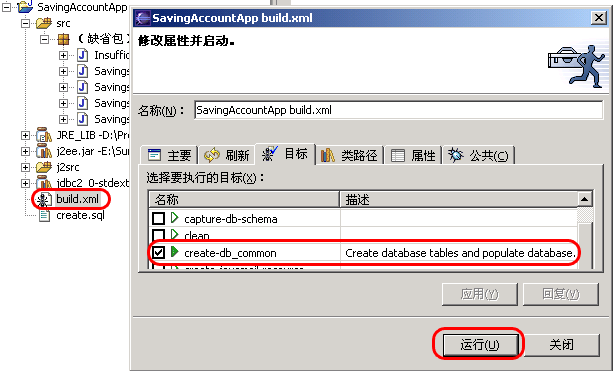

由上一篇blog可知，实体EJB有bean管理持久性和容器管理持久性两类，今天的例子是前者。
说一下我的运行环境：win2kAdvSvr+J2EE 1.4 SDK,数据库是PointBase,应用服务器是sun appserver。
例子中用到的所有源文件或配置文件，都可以从这儿下载。需要提醒的是，解压缩后，修改一下examples\common\build.properties文件中j2ee.home的值。
1、利用eclipse进行编辑和编译
需要特别指出，j2ee中不含有jdbc包，需要到Sun的网站去下载,我下载的是jdbc2_0-stdext.jar，且把它放在{j2ee.home}\lib目录下了。
然后在eclipse要把这个包加入进来。如图：
然后运行ant，第一步把数据库表建立起来，第二步把程序编译。

2、利用j2ee SDK中的deploytool将应用部署，具体的过程参见前面的blog，有几点不同的地方在此指出。
首先修改{j2ee.home}\lib\launcher.xml文件，在<sysproperty key="com.sun.aas.installRoot" value="${com.sun.aas.installRoot}"/>一行的上面增加三行：
<sysproperty key="user.country" value="US"/>
<sysproperty key="user.language" value="en"/>
<sysproperty key="user.region" value="US"/>
运行pointbase数据库：开始－＞程序－＞Sun Mircosystems－＞J2EE 1.4 SDK－＞Start PointBase
运行应用服务器：开始－＞程序－＞Sun Mircosystems－＞J2EE 1.4 SDK－＞Start Default Domain
运行部署程序：开始－＞程序－＞Sun Mircosystems－＞J2EE 1.4 SDK－＞DeployTool
部署时注意如下：
tools->Deploy时，注意选择return client jar.
3、运行客户端